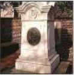

A Brief History
Edgar Allan Poe, son of Actress Eliza Poe and Actor David Poe Jr., born 19th of January 1809, was mostly known for his poems and short tales and his literary criticism. He has been given credit for inventing the detective story and his psychological thrillers have been influences for many writers worldwide.
In 1827 Edgar published his first book, "Tamerlane and other poems" anonymously under the signature "A Bostonian". The poems were heavily influenced from Byron and showed of a youthful attitude.
- The Cask Of Amontillado
- The Pit and the Pendulum
- The Raven
- The Tell-Tale Heart
The Poe Museum
The Poe Museum. The Poe Museum provides a retreat into early nineteenth century Richmond where Edgar Allan Poe lived and worked. The museum features the life and career of Edgar Allan Poe by documenting his accomplishments with pictures, relics, and verse, and focusing on his many years in Richmond. Opened in 1922, in The Old Stone House, the museum is only blocks away from Poe's first Richmond home and his first place of employment, the Southern Literary Messenger.
Quotes of Edgar Allan Poe
This maiden she lived with no other thought, Than to love and be loved by me.
I would define, in brief, the Poetry of words as the Rhythmical Creation of Beauty.
Its sole arbiter is Taste.
Deep into that darkness peering, long I stood there, wondering, fearing,
Doubting, dreaming dreams no mortal ever dreamed before.
The skies they were ashen and sober;
The leaves they were crisped and sere - The leaves they were withering and sere;
It was night in the lonesome October,
Of my most immemorial year.
The Death of Edgar Allan Poe

Poe suffered from bouts of depression and madness, and he attempted suicide in 1848. In September the following year he disappeared for three days after a drink at a birthday party on his way to visit his new fiancée in Richmond. He turned up in a delirious condition in a Baltimore gutter and died on October 7, 1849.